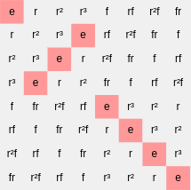
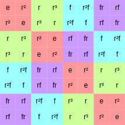

The multiplication table is a very widely used tactic for depicting a group operation. Let's take a look at some of its infrequently-tapped potential.
Before beginning, if you have not yet encountered the multiplication table visualizer, feel free to read its formal definition and a little information about it. Feel free also to refer to the documentation on the multiplication table interface in Group Explorer.
Among the nicest things about multiplication tables are the advantages that come from coloring the backgrounds of their cells. Although most visualizers allow highlighting somehow, multiplication tables work very nicely for making patterns in the group operation jump out clearly. Let me illustrate this by contrasting a bad example with a good one.
Bad example |
|
 |
The backgrounds of the cells in this multiplication table are colored based on whether they are in a particular 2-element subgroup. This does not look as helpful in a multiplication table as it does in a cycle graph or Cayley diagram, because each element appears multiple times in a multiplication table. |
Good example |
|
 |
The backgrounds of the cells in this multiplication table are colored based on their membership in the cosets of the subgroup highlighted in red. This shows how the group operation in this example respects the cosets nicely--in fact, by considering each block of like-colored neighbors as one big cell, one can see the multiplication table of the quotient group! The subgroup in question is therefore normal. |
I will leave it as an exercise to the reader to find a group with a non-normal subgroup, and highlight a multiplication table of the group by the cosets of the non-normal subgroup.
Note further that there are some things that most visualizers are good at; for instance, one can see a lattice of subgroups illustrated by multiplication tables, or a short exact sequence of groups. Both of these advanced uses of multiplication tables tie in homomorphisms, which are visible on sheets.
Quick help links:
Contents | Getting Started | Tutorials | User Manual | Miscellaneous Reference
GE terminology | Help on help
{kind=link}
{kind=link}